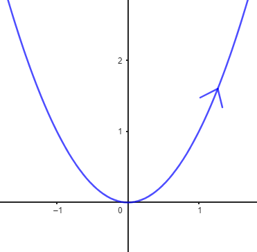

Outro exemplo de curvas que nós devemos conhecer bem são o gráfico de funções como a parábola \(y=x^2\), por exemplo. Observe que essa parábola é o gráfico da função quadrática \(f(x)=x^2.\)
Se lembramos de cursos anteriores de cálculo, os pontos do gráfico da função \(f(x)=x^2\) são da forma (x,y), com \(y=x^2\). Então, fazendo x=t, uma equação paramétrica para o gráfico da função \(f(x)=x^2\) seria:
\begin{cases} x(t) &= t \\ y(t) &= t^2\end{cases} \quad ,\,t\in \mathbb{R}
Observe que x=t, portanto t está definido onde estiver definido o x. Isto é no domíno da função \(f(x)=x^2.\)
A parametrização em forma vetorial é:
X(t)=(t, t^2), \;t\in \mathbb{R}
Curiosidade: Pergunte seu/sua professor/a o que significa a setinha que aparece na imagem do segmento. Com certeza ele/a vai falar de orientação de curvas!
Uma equação paramétrica da função \(f(x)=\ln(x)\) seria:
\begin{cases} x(t) &= t \\ y(t) &= \ln(t)\end{cases} \quad ,\,t\in (0,+\infty)
Observe que \(\quad t\in (0,+\infty)\quad \) devido a que o domínio da função logaritmo é o conjunto dos números reais estritamente positivos.
Curiosidade: Para onde iria a setinha no gráfico da função?
Legal, né?
Entre em contato com os monitores se ainda estiveres com dúvidas.
Força!